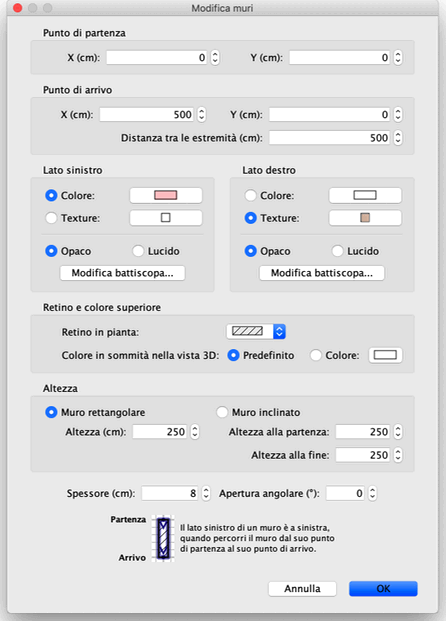

|
|
Modificare i muri | ||
|
Puoi modificare la posizione e la lunghezza dei muri della casa, tramite il mouse
oppure attraverso la voce di menù Piano > Modifica muri... Quando un muro è selezionato nella piantina puoi inoltre spostare il suo punto di inizio e il suo punto di fine, tramite l'indicatore di misura che appare alla fine di ogni muro selezionato.
|

|
|
Quando il puntatore del mouse è sul punto iniziale o finale del muro selezionato,
cambia per indicare che puoi trascinare quel punto per spostarlo. Mentre il pulsante
del mouse è premuto, un suggerimento mostra la lunghezza del muro. Un muro può essere inoltre modificato grazie al suo pannello, facendo doppio clic in quel muro nella piantina della casa o scegliendo Piano > Modifica muri... dopo averlo selezionato. 
Nel pannello relativo al muro, puoi cambiare le coordinate del punto d'inizio e di
fine, i colori o i rivestimenti dei lati destro e sinistro, il suo spessore e la sua
altezza. |
|